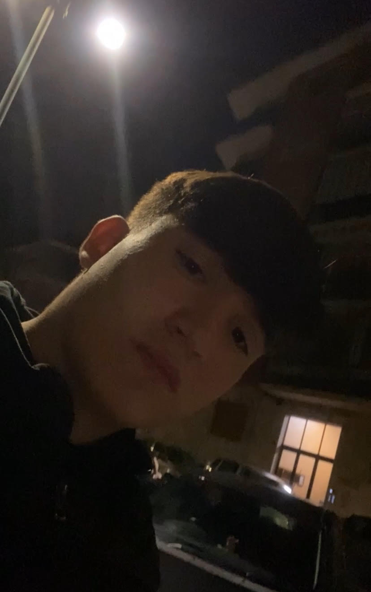

Mi presento
Mi presento
- Samuel La Marca
- ho 16 anni
- vado al maxwell in 2CIT informatica e telecomunicazione
- 10 agosto 2008
>
- a Nichelino (TO)
Mi presento mi chiamo Samuel La Marca sono nato il 10 agosto 2008,sono nato a nichelino e tutto ora ci abito,ho due sorelle si chiamano Melissa e Nicole,
Melissa è più piccola di un anno,invece niky è mia gemella,mi piacciono le moto,infatti ho da poco preso un aerox 50 e poi la boxe, nel tempo libero oltre allo studio mi piace uscire,andare a ballare,giocare alla play con i miei amici,
da grande vorrei diventare un programmatore parlando a livello scolastico e lavorativo,ma il mio sogno è diventare un pugile professionista a livelli molto alti,tra poco potrò riprendere il mio percorso sulla boxe per inseguire il mio obbiettivo principale,
con il mio obbiettivo voglio migliorare la vita della mia famiglia,soprattutto i miei genitori che hanno sempre fatto di tutto per e spero che potrò dargli la possibilità di non lavorare più,
parlando di nuovo a livelli scolastici,dopo il diploma non farò l'univesita oerchè non ne ho mai avuto intenzione di farla ma vorrei andare a lavorare come informatico subito dopo la scuola,
spero che tutto quello che ho scritto possa diventare realtà,
la mia foto
